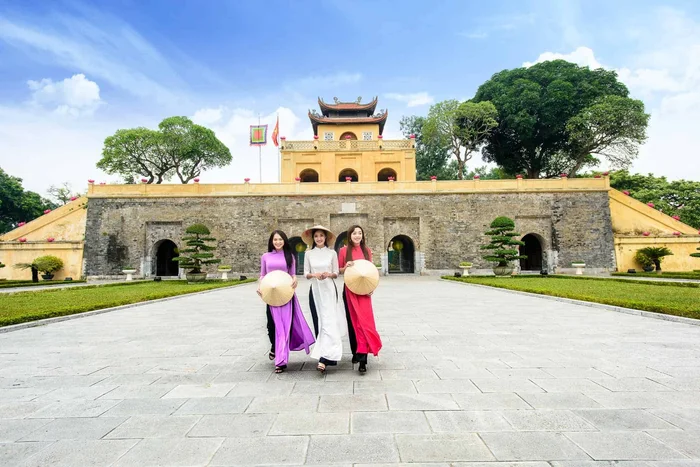
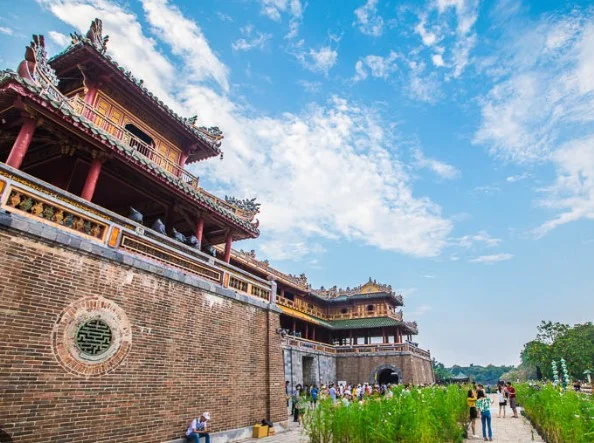

Language
Lesson 2 — Intonation · Our heritage · To-infinitive clauses
6Five stops in 45 minutes
- 🎬
Heritage video
Warm-up
5 min - 🎵
Pronunciation
Intonation
12 min - 🏛️
Vocabulary
Our heritage
12 min - ✍️
Grammar
To-infinitive clauses
13 min - ✅
Wrap-up
Exit ticket
3 min
Warm-up
Heritage of Viet Nam
5 minutesHow many heritage sites can you name?
No internet? Be the voice conductor: raise your hand ↗ or lower it ↘ as you read — “We are visiting Hoi An next week.” · “I love temples, pagodas and monuments.”
UNESCO heritage of Viet Nam
- Complex of Hue Monuments
- Hoi An Ancient Town
- My Son Sanctuary
- Ha Long Bay
- Phong Nha – Ke Bang
- Thang Long Imperial Citadel
- Trang An
- gong culture
- Hue court music
- quan ho
- ca tru
- don ca tai tu
Pronunciation
Intonation in statements, commands and lists
12 minutesOur voice rises and falls
Falling ↘
at the end of statements and commands — to show certainty
Level-rising ↗
on each item in a list … then falling ↘ on the last item
Statement ↘ · Command ↘ · List: ↗ , ↗ and ↘
Follow the arrows
1. Our class is going on a field trip next week. ↘
2. Put your rubbish in the bin! ↘
3. You can see beautiful caves ↗, green valleys ↗, and high mountains. ↘
Mark the intonation
1. Hoi An Ancient Town became a World Heritage Site in 1999. … in 1999. ↘
2. Turn on the light. It’s dark in here. … the light. ↘ … in here. ↘
3. Cultural heritage may include temples, pagodas, and monuments. temples ↗, pagodas ↗, and monuments. ↘
4. Tourists can visit the pedestrian streets in Ha Noi. … in Ha Noi. ↘
Vocabulary
Our heritage
12 minutes


Meanings a–e
a. connected with things from the past
b. traditional to a particular group or country, and usually passed down from generation to generation
c. important in history
d. to return something to an earlier good condition or position
e. to keep something in its original state or in good condition and prevent it from being damaged
Words 1–5
1. restore (v) d
2. historical (adj) a
3. preserve (v) e
4. folk (adj) b
5. historic (adj) c
historical or historic?
1. Mary enjoys reading ______ novels set in World War Two. historical
2. This meeting of world leaders was a truly ______ event that is likely to be remembered in the future. historic
3. The local authority plans to ______ the old monument which was damaged by the storm. restore
Use the context clues
4. We should increase efforts to ______ ca tru because nowadays there are very few ca tru musicians left. preserve
5. Many ______ songs tell stories about lives of ordinary people in the past. folk
Tip
historical = about the past · historic = important in history
Grammar
To-infinitive clauses
13 minutesTo + verb
to express purpose
He studied hard to pass the exam.
I bought some souvenirs to give to my parents.
to modify a noun
after the first, the second, the best, next, last, only …
Ethan is usually the last person to understand the joke.
Why did they do it?
1. Lan went to Hue. She wanted to see the monuments there. Lan went to Hue to see the monuments there.
2. Minh created a website. He wanted to give more information about local historical sites to visitors. Minh created a website to give more information about local historical sites to visitors.
Why did they do it?
3. Peter took a boat trip around the floating market. He wanted to listen to don ca tai tu there. Peter took a boat trip around the floating market to listen to don ca tai tu there.
4. My sister has opened a small shop behind the museum. She wanted to sell postcards and souvenirs to tourists. My sister has opened a small shop behind the museum to sell postcards and souvenirs to tourists.
Use to-infinitive clauses
What do tourists visit Hoi An for? · What can students do to preserve folk songs? · Who was the first person in your class to visit Hue?
Say one sentence about WHY we preserve heritage
- 🎵
statements and commands ↘ · lists ↗ ↗ ↘
- 🏛️
restore · preserve · historic · historical · folk
- ✍️
to + verb for purpose · after the first / the only …
Homework
1. Do the Language exercises in the workbook.
2. Write 3 sentences about heritage with to-infinitive clauses.
3. Get ready for Lesson 3 — Reading.